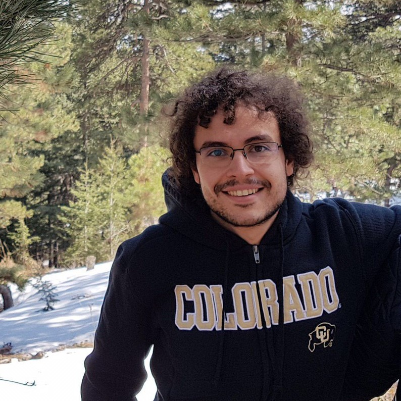

I am Altug Karakurt an electrical and computer engineer interested in machine learning, communication networks and information theory.
I am currently a software developer at DAtAnchor, implementing data security solutions.
You can find me at the following links: